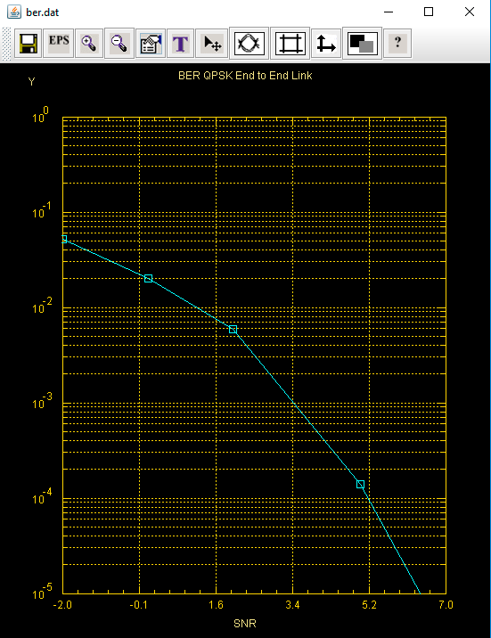
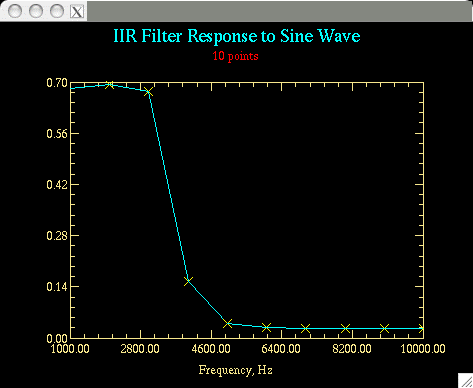

CapsimTMK V6 has scripting support using a built in TCL interpreter. A major goal of adding TCL scripting is to support iterative simulations and to support TCL command interface to numerical packages such as LAPACK.
The TCL commands support all of the CapsimTMK commands with the addition of new commands to refer to parameters by name and to change their value. Also CapsimTMK blocks can return values from simulations via TCL variables.
The best way to see the power of TCL scripting is to review a TCL script for creating a table of BER (bit error rate) versus SNR (signal to noise ratio) in the simulation of a QPSK digital link.
#new
set snr { -2 0 2 5 7 }
set bits { 10000 10000 100000 100000 10000000 }
capload sys-ete-snr.t
set berResults [list {}]
foreach snrVal $snr numbits $bits {
#
# for each value of SNR $snr and corresponding
# in the topology. The number of bits is a global
arg 3 int $numbits "number of bit
to setsnr0
#
# when the simulation is run, at the end of the
puts -nonewline "$snrVal : $numbits "
puts "BER=$ecountfap0_ber"
# gather the results in a list for each simulation
lappend berResults [list $snrVal $ecountfap0_ber ]
}
#
puts [ llength $berResults ]
foreach value $berResults {
puts -nonewline [lindex $value 0]
In the above script the key points are that once a topology is loaded, sys-ete-snr.t in this case, we can access any block parameter by name. We can also access the topology arguments. Furthermore, once a simulation is run, blocks can store their results in TCL variables. In this case the BER is stored in the variable $ecountfap0_ber.
The results of the simulation are:
SNR BER

Another important aspect of TCL scripts is that TCL commands including mathematical expressions can be used to set parameter values prior to running a simulation.
IIR Filter Response Sine Wave Various Frequencies
Finally, using TCL scripting algorithms can be developed for optimization of designs. In addition, sensitivity studies can be performed where the sensitivity of overall system performance to parameter variation can be analyzed.
Here is another Capsim TCL script example. Figure 1 shows the topology for iirtest.t. A sine wave is generated and filtered by an IIR low pass filter. Its rms value is calculated using the stats block. The TCL script changes the frequency parameter in the sine block (freq), runs a simulation, and retrieves the measured RMS value of the filter output from the stats block. The stats0 block returns the RMS value as a TCL variable stats0_rms.

Figure 1 iirtest Topology
#
# TCL Script that iterates a number of simulations
new
#turn the printer probe off
set results [list {}]
for { set i 0} { $i < 10 } { incr i} {
}
puts -nonewline Freq
puts -nonewline "\t"
foreach value $results {
puts -nonewline [lindex $value 0]
puts -nonewline "\t"
}
The results of the simulation are:
Freq RMS

The iirtest.t topology is provided below. Note that the freq parameter that changes the frequency of the sine wave generator block is highlighted ( the TCL command parambyname is used to change the frequency):
arg -1 (none)
param int 128 num_of_samples "total number of samples to output"
param file stdout file_name "Name of output file"
param int 0 skip "Points to skip"
param int 3 desType "1=Butterworth,2=Chebyshev,3=Elliptic"
connect sine0 0 iirfil0 0
2 Capsim TCL Command Summary
In the following summary of TCL commands, most commands are exactly the same as the Capsim commands with the following exceptions:
To store a topology the TCL command is capstore instead of store.
To load a capsim topology the TCL command is capload instead of load.
The Capsim command info in TCL is getinfo.
TCL Commands:
display [g or s]
block block_model,or block block_name block_model
replace block_model,or block block_name block_model
HBlock block_model, or HBlock block_name block_model
chp [param number] [paramvalue]
connect blockNameSrc [port] blockNameDest [port]
disconnect blockNameSrc [port] blockNameDest [port]
run
new
to path_to_block
capstore [file_name]
capload file_name
arg argnum argtype argval "argprompt"
up
down
back
forward
setCellInc integer (number of cells allocated to increase buffer FIFO)
setMaxSeg integer (Maximum number of cell increments, setting too high may cause memory over flow. Too low results in buffer over flow)
path [sgd] thePath
remove
delete
insert <-,+> <specifiedBlockName> <i,o number>
signame name_to inNum sigName
inform field info
makecontig
state
getinfo
man block
parambyname name value